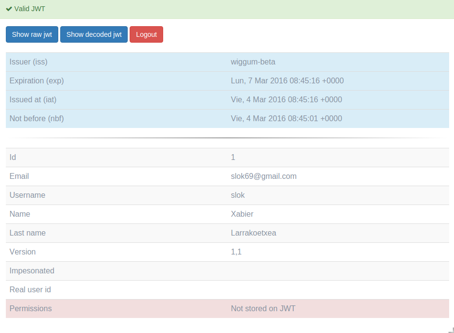

Authentication: is the act of confirming the truth of an attribute of a single piece of data (a datum) claimed true by an entity
From the wikipedia
Login
When you enter in a/login url of a wiggum endpoint you will see the main
form. You can force a redirect using querystring, by default you can use next
or redirect_uri. For example: a/login?next=http://myapp.com/welcome
If the login is correct, wiggum will create a JWT token and will set on the cookie. if cloning cookie across domain is enabled, a chain of redirects will happen to set the cookie on all the domains
Logout
To logout you need to enter in a/logout this will logout (delete the cookie)
from user session, if clone across domain is enabled, a chain of redirects will
happend to remove the cookie from all the domains.
As with Login a redirect querystring can be pass in the url so wigumm redirects the
user after a successful logout. For example: a/logout?next=http://myapp.com/goodbye
Password reset
Wiggum implements password reset, this has to be done in two steps, first you need
to request a password recovery by entering your email on a/recover-password. This
will generate a password reset token and URL with the form: a/reset-password/1/b3297c67-ec25-4625-af56-1f14dfb1d5d4
This URL at this moment isn't sent by email because this link can be send in many ways, so is up to the developer to implement and customize a send URL action as you will see in customization section.
The generated token will last to the time the setting PASSWORD_RESET_EXPIRE_DELTA is set and after the first use the token will be invalidated
Check JWT cookie is correct
Wiggum has included a very handy endopint to check the JWT wiggum cookie is set
correctly. After login in you can enter in a/test/jwt to check JWT cookie
information and validation
